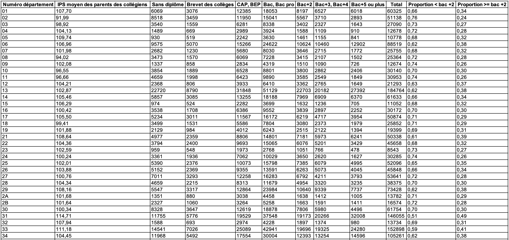
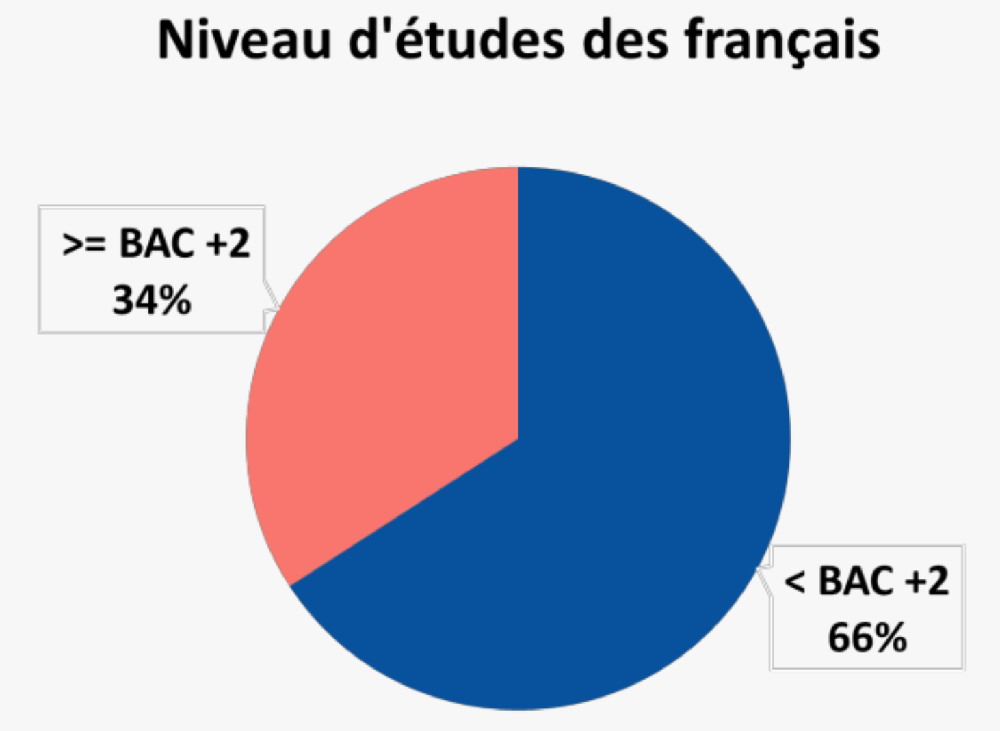
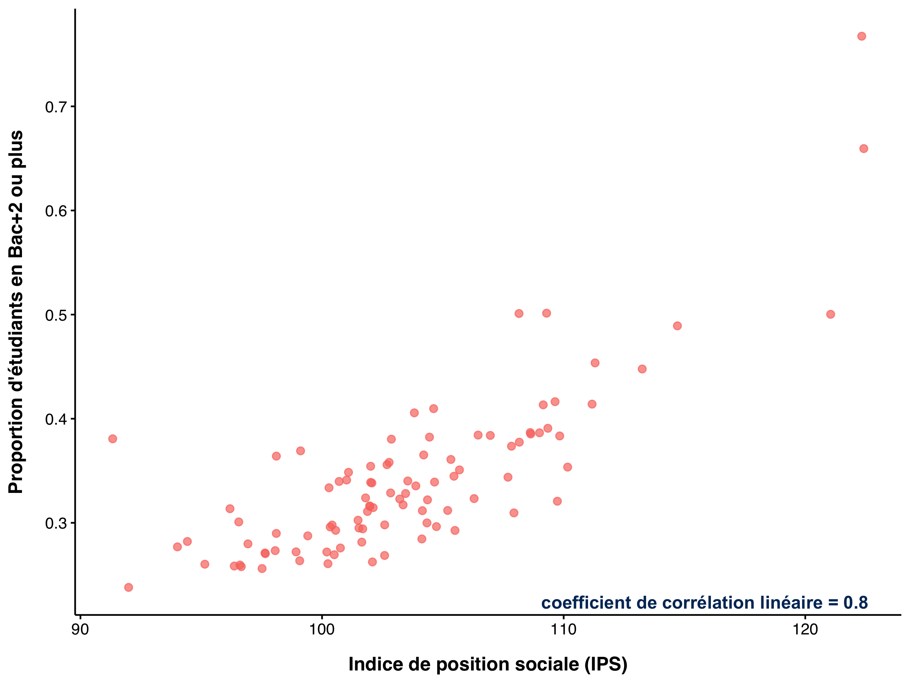
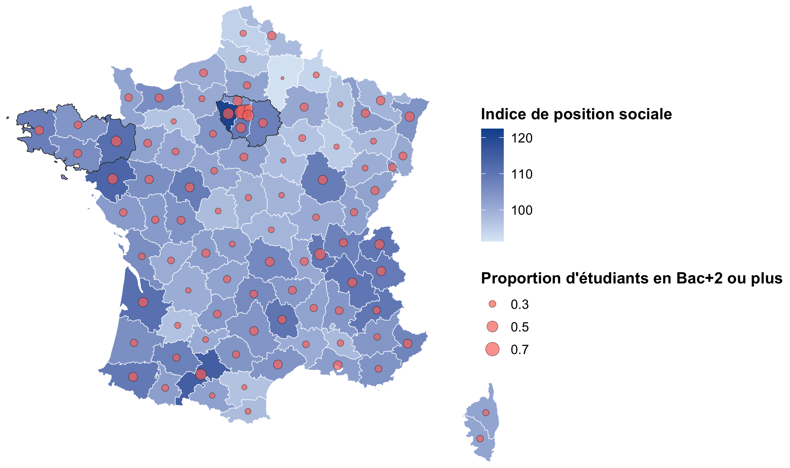
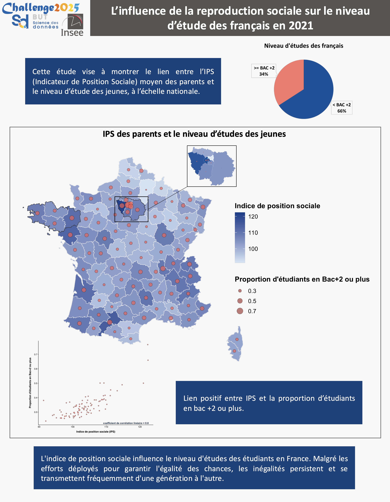

Cette capture d’écran présente un tableau détaillé présentant la répartition des niveaux d’études des parents d’élèves par département, issu des données de l’INSEE. On y observe des colonnes telles que l’IPS moyen (Indice de Position Sociale), le nombre de parents sans diplôme, ainsi que la répartition des diplômes (Brevet, CAP-BEP, Bac et plus) et des indicateurs de proportion, que j'ai calculé.
Ce tableau est une étape essentielle puisqu'il est la base de notre analyse et nous a permis de réaliser le poster.
Cette preuve me permet d’acquérir les compétences suivantes : AC 11.04, car j’ai su maîtriser la structure des données en organisant correctement les informations nécessaires à l’analyse, et AC 12.02, car j’ai compris que l’analyse correcte repose sur des données propres et préparées.
Cette capture d’écran montre un diagramme en secteurs représentant la répartition du niveau d’études des français en deux catégories : « < BAC +2 » (66 %) et « >= BAC +2 » (34 %).
Ce graphique met en évidence la dominance de la catégorie « < BAC +2 » au sein de la population avec 66% qui se sont arrêtés avant un BAC +2, tout en illustrant la part minoritaire de la population ayant un niveau d’études supérieur ou égal à BAC +2.
Cette preuve valide la compétence AC 12.03, car elle montre que j’ai su utiliser une représentation graphique simple et efficace pour décrire la distribution d’une variable statistique (niveau d’études), afin de faciliter la compréhension et l’interprétation des données.
Cette capture d’écran présente un nuage de points montrant la relation entre l’indice de position sociale (IPS) et la proportion d’étudiants en Bac+2 ou plus. Chaque point correspond à un département, et l’on observe une tendance générale positive.
La présence du coefficient de corrélation linéaire (0.8) permet de mesurer la force de la liaison entre ces deux variables et de confirmer la tendance observée.
Cette preuve valide la compétence AC 12.04, car elle démontre que j’ai su mettre en évidence graphiquement et numériquement la liaison entre deux variables, afin de faciliter l’interprétation statistique et la compréhension des données.
Cette capture d’écran présente une carte de France combinant deux statistiques : la valeur de l’indice de position sociale (IPS) représentée par des teintes de bleu, et la proportion d’étudiants en Bac+2 ou plus indiquée par des cercles rouges de taille variable.
La superposition de ces deux indicateurs permet de comparer visuellement les niveaux d’éducation avec l’indice de position sociale.
Cette preuve valide la compétence AC 12.04, car elle montre que j’ai su mettre en évidence la liaison potentielle entre deux variables (IPS et proportion d’étudiants Bac+2 ou plus) à l’aide d’une représentation graphique pertinente.
Elle valide également la compétence AC 13.05, car j’ai compris l’importance de la datavisualisation pour faciliter l’analyse des données et rendre l’information plus accessible et plus lisible.
Cette capture d’écran présente le poster final réalisé dans le cadre du Challenge DataViz 2025. Il synthétise les résultats de l’étude sur la reproduction sociale et le niveau d’études des jeunes en France en 2021, à partir des données de l’Insee.
Le poster contient plusieurs visuels (carte de France avec deux variables, camembert, diagramme de corrélation) et des textes explicatifs.
Cela prouve ainsi que j’ai compris l’importance de la data visualisation et de l’infographie pour rendre les résultats accessibles et pertinents (AC 13.05) et que j'ai su identifier et contextualiser les données. J’ai également présenté mon poster à l’oral, démontrant ainsi que je suis capable de communiquer de manière précise et nuancée les résultats de l’étude (AC 13.06). Enfin, ce poster valide la compétence AC 11.01, car j’ai su répondre au besoin du commanditaire (proposer un document clair, illustré et synthétique qui répond à la problématique posée).
R / Excel
Dans cette SAÉ, j’ai pris la posture d’un data visualizer. Mon objectif était de représenter visuellement les données issues de l'Insee, Institut national de la statistique et des études économiques, créé en 1946, afin de faire ressortir des éléments clés en répondant à une problématique posée.
J’ai mobilisé les ressources reporting et datavisualisation (R2.01), statistique descriptive 2 (R2.05) et communication professionnelle (R2.10) pour structurer les données, choisir les indicateurs pertinents et construire des représentations graphiques lisibles et cohérentes.
J’ai sélectionné les données utiles à partir d’un jeu de données assez complexe, nettoyé et structuré l’information, puis conçu une série de visuels (cartes, nuage de points, diagrammes en secteurs). J’ai ensuite présenté mes résultats sous forme de poster.
J’ai appris à contextualiser les données, à extraire l’essentiel sous forme visuelle, à évaluer la pertinence d’un graphique, et à communiquer des résultats de manière claire, précise et adaptée.
Compétences développées :
— AC 11.01 |Correctement interpréter et prendre en compte le besoin du commanditaire ou du client
J’ai su répondre au besoin du Challenge DataViz en concevant un poster clair et pertinent à partir des données de l’Insee, en respectant les attentes du challenge.
— AC 11.04 |Mesurer l’importance de maîtriser la structure des données à exploiter
J’ai organisé et structuré les données INSEE pour garantir leur bonne exploitation et faciliter les analyses statistiques et graphiques.
— AC 12.02 |Comprendre qu’une analyse correcte ne peut émaner que de données propres et préparées
J’ai nettoyé et vérifié les données avant de réaliser les visuels pour assurer la fiabilité des résultats présentés.
— AC 12.03 |Comprendre l’intérêt des synthèses numériques et graphiques pour décrire une variable statistique
J’ai conçu un visuel clair (diagramme en secteurs) afin de synthétiser l’information sur le niveau d’études (« < BAC +2 » et « >= BAC +2 »).
— AC 12.04 |Comprendre l’intérêt des synthèses numériques et graphiques pour mettre en évidence des liaisons entre variables
J’ai réalisé un nuage de points et une carte pour montrer la corrélation entre l'IPS et la proportion de diplômés (« >= BAC +2 »).
— AC 13.02 |Identifier l’importance de contextualiser ses données
J’ai travaillé à partir de données de l’Insee et pris soin de situer l’analyse dans le contexte français de la reproduction sociale et de l’accès aux études supérieures.
— AC 13.05 |Comprendre les intérêts de la data visualisation et de l’infographie
J’ai choisi des graphiques pertinents pour rendre l’information accessible et visuelle, tout en facilitant l’interprétation des résultats.
— AC 13.06 |Mesurer l’importance d’une expression précise et nuancée dans la communication en français et dans une langue étrangère des résultats
J’ai présenté le poster à l’oral en expliquant les résultats de manière claire, en montrant ma capacité à communiquer les données avec une certaine précision.